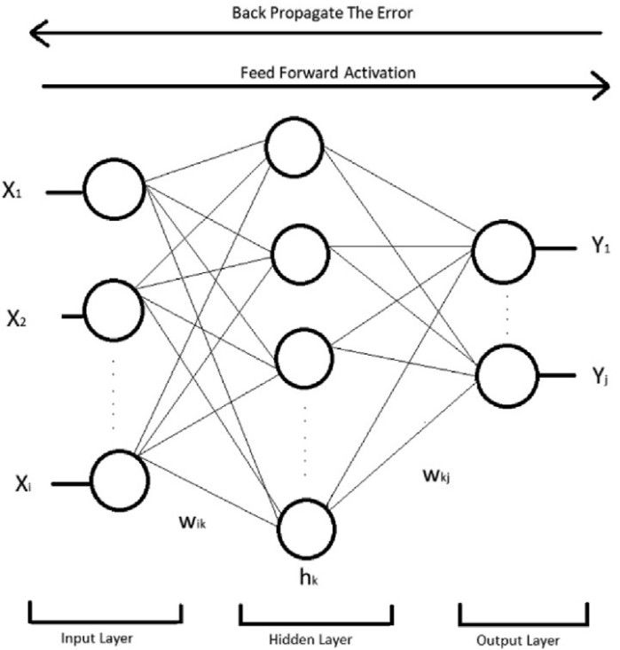
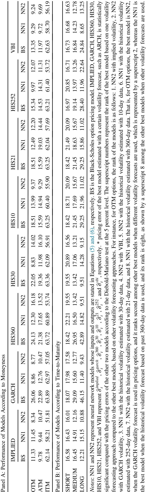
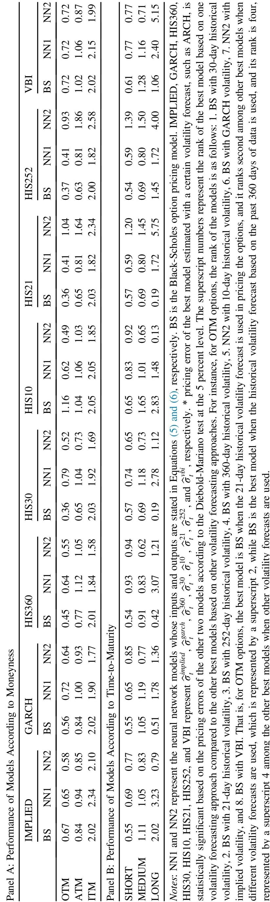
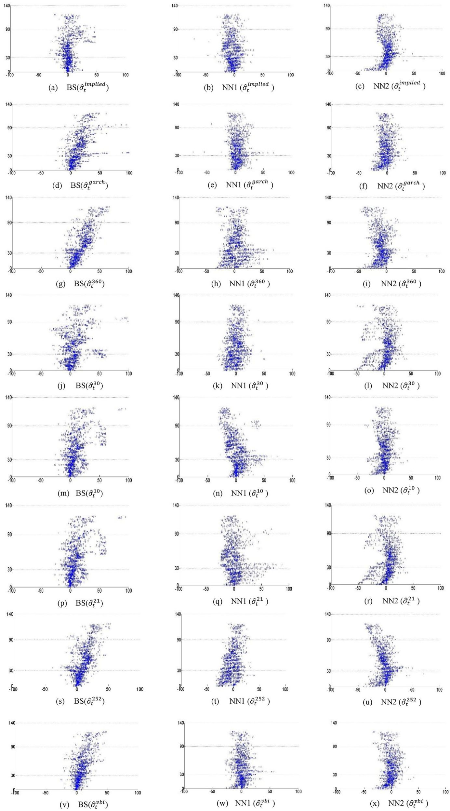

FYP Presentation · Paper Focus
Neural Networks vs Black–Scholes for BIST 30 Index Options
同一個新興市場、同一批期權，換模型與波動率之後，誰比較準？平靜期和動盪期答案一樣嗎？
İltüzer (2022), Borsa İstanbul Review
Option pricing with neural networks vs. Black–Scholes under different volatility forecasting approaches
Why this paper
成熟市場常說 NN 贏，新興市場卻幾乎沒被驗證
01. 證據偏美歐日
S&P、FTSE、DAX、Nikkei 上，多數研究指 NN 優於 BS，尤其 ATM 與 OTM。
02. 新興市場幾乎空白
台灣指數期權是少數例外，而且有時是 BS 比較準。BIST 30 市場更淺、波動更高。
03. 波動率才是關鍵假設
這篇不換整套隨機波動率模型，而是把波動率預測當成實驗因子，系統地比下去。
貢獻不是新公式，而是把「NN 是否穩贏 BS」變成一個可被市場狀態推翻的實證問題。
Research questions
三個問題，整場都圍繞它們
RQ1
NN 有沒有整體優於 BS？
對 BIST 30 歐式買權與賣權，資料驅動的神經網路是否比 Black–Scholes 更準。
RQ2
哪一種波動率最好？
歷史波動率、GARCH、隱含波動率、VBI，哪一種讓定價 RMSE 最低。
RQ3
切開之後會不會翻盤？
依 moneyness、到期長短、平靜／動盪期拆開，結論是否仍然成立。
Data and split
時間序列切分，避免未來資料漏進訓練
| 項目 | 設定 |
|---|
| 標的 | BIST 30 歐式 call / put |
| 期權樣本 | 2017/03–2021/08 |
| 無風險利率 | TRLIBOR 插值 |
| Train | 2017/03–2020/06 |
| Validation | 2020/07–2020/12 |
| Test | 2021/01–2021/08 |
| 動盪子樣本 | 2018/04（依 WUI） |
Moneyness
ITM / ATM / OTM 分開評估，因為價內期權價格較大，RMSE 容易被拉高。
Time-to-maturity
短 ≤ 1 個月；中 1–3 個月；長 > 3 個月。
不是隨機抽樣。金融時間序列必須按時間切，測試集才代表「沒見過的未來」。
Pricing models
同一個波動率輸入，餵給三種定價函數
Black–Scholes
經典公式，但 \(\sigma\) 不是常數，而是換成 \(g(\sigma_t)\)。
NN1：模仿 BS 的輸入
ct = f(St, X, rt, T−t, g(σt))
現貨與履約價分開餵入。
NN2：齊次設定（Hutchinson et al. 1994）
ct/X = f(St/X, rt, T−t, g(σt))
只餵 moneyness，較不容易被價格水準帶走。

Fig. 1 · 單隱藏層 MLP。ReLU、L-BFGS、validation early stopping。波動率是輸入特徵，不是模型本身。
Volatility forecasts
這篇真正操縱的變數，是波動率怎麼估
Historical volatility
日對數報酬年化標準差。視窗：10 / 30 / 360 曆日，以及 21 / 252 交易日。短窗跟近況，長窗較平滑。
GARCH(1,1)
捕捉波動聚集（volatility clustering）。每天用最近一年報酬滾動估計，再年化。
Implied volatility
用當日最接近 ATM 的合約反解 BS 的 σ，再套到同一天其他合約。這是市場今天報的波動率。
VBI
土耳其期權市場隱含波動率指數，把市場不確定性收成一條指數。
後面所有 RMSE 表，比的都是「模型 × 波動率」組合，不是單一神經網路。
Results · Call · Full sample
平時買權：NN2 配 implied vol 最準

Table 1 · Out-of-sample RMSEs for call options, full sample.
要指的三點
- 全樣本最佳常是 NN2 + implied volatility。
- OTM、ITM、短／中期，NN2 多半贏過 BS 與 NN1。
- ITM 誤差約是 OTM／ATM 的 4–5 倍：價內期權大家都定不準。
平時買權，資料驅動的 NN2 較貼市價。NN2 的齊次輸入，也比 NN1 更穩。
Results · Call · Turbulent subsample
2018 年 4 月一亂，短期買權改由 BS 勝出

Table 2 · Call options in April 2018, the turbulent month identified by WUI.
翻盤在哪
- OTM／ATM：BS + 30-day / 21-day historical vol 最好。
- 短期買權：不論波動率怎麼換，BS 多半贏 NN。
- NN 在平靜期學到的非線性，遇到 regime shift 會失效。
文獻常說 NN 贏。這篇顯示：一進入動盪，參數少、行為可預期的 BS 反而更穩。
Results · Put
賣權故事相反：平常是一年歷史波動率的 BS

Tables 3–4 · Put-option RMSEs, full sample and turbulent subsample.
全樣本
BS + 360-day historical vol 幾乎橫掃 OTM／ATM／ITM，以及短／中期。長期則是 BS + VBI。
動盪期
OTM 仍是 BS。ATM／ITM 變成 NN 較好。短期：NN1 + implied；中期：NN2 + GARCH。
不能把 call 的結論直接套到 put。買賣權不對稱，本身就是結果。
Takeaway table
整場只記這張：勝負是條件式的
|
平靜／全樣本 |
動盪期（2018/04） |
| Call |
NN 贏，尤其 NN2 + implied vol |
BS 贏，尤其短窗 historical vol |
| Put |
BS 贏，尤其 360-day historical vol |
NN 在 ATM／ITM 追上；OTM 仍是 BS |
偏差方向
BS 常 underprice 買權；NN2 常 overprice 短期買權。動盪期這個模式還在。
一句話結論
不是 NN 取代 BS，而是模型選擇取決於波動率、選擇權類型，以及市場狀態。
Contribution and limits
這篇把問題變清楚，而不是把模型變更大
可以帶走的貢獻
- 新興市場上，NN 優於 BS 不是普遍定律。
- 波動率輸入會改排名：implied vol 幫 NN，長窗歷史波動率幫 BS 賣權。
- 必須做 subsample：平靜與動盪會翻盤。
- 齊次的 NN2 通常比原始 NN1 穩。
先自己講的限制
- 單一市場、單一指數。
- 動盪期只有一個月；長期 put 樣本很少。
- 淺層 MLP，不是 LSTM／深度結構。
- 比的是 RMSE，不是交易利潤或避險誤差。
- Implied vol 從 ATM 市價反解，帶有市場資訊優勢。
Close
要先選對波動率和市場狀態，再決定用不用神經網路。
BIST 30 的證據顯示：買權平時 NN2 較準，一動盪 BS 較穩；賣權平時則是一年歷史波動率的 BS。
Q&A · İltüzer (2022)